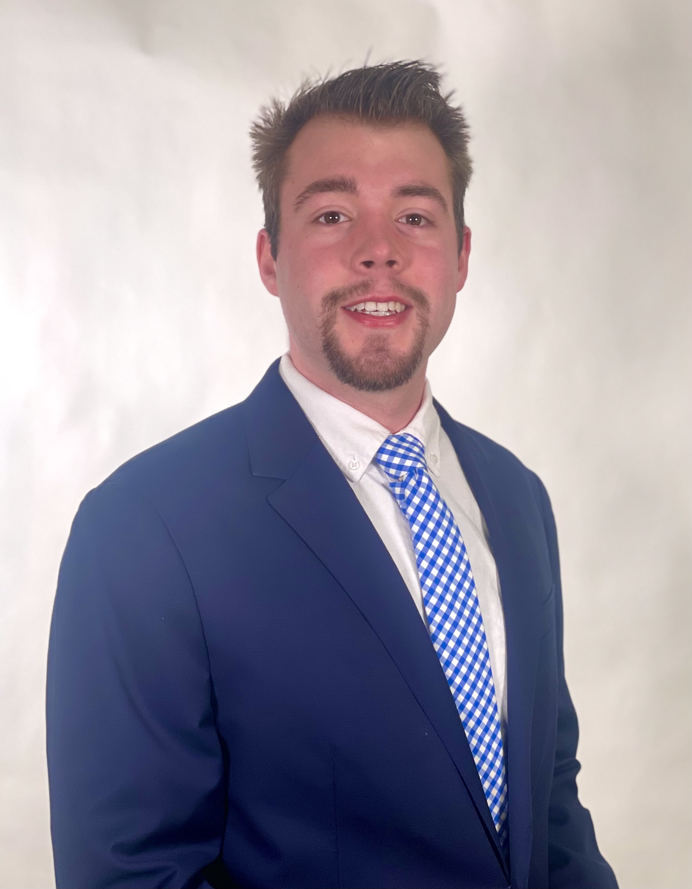

Hi! My name is Edward Leskauskas (but I go by E.J.) and I am currently at senior at Michigan State University. Currently, I am pursuing a degree in Information Science, with a focus in Human-Centered Technology.
Originally from New Jersey, I came to MSU to expand my horizons and explore what Michigan offers. Coming to college, I planned on studying Political Science and going to law school, but I found that I had a passion for technology. As a current Information Science student, the main focus of my studies has been in cybersecurity and cloud computing.